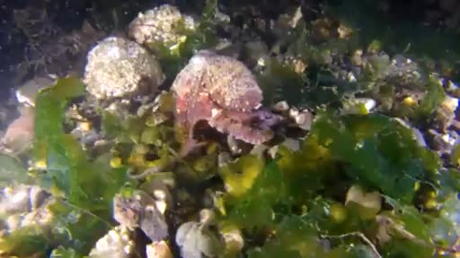

Görsel seçimi · Ahtapotun Üç Kalbi
Her sahne için seçilen gerçek görüntüden 3 kare. Uygunsa issue'daki GÖRSEL ONAY kutusunu işaretle; video o zaman üretilir.
Sahne 1: 'a real, live octopus' için uygun görüntü bulunamadı.
Sahne 1
This animal has three hearts. And its blood is blue.
Uygun görüntü bulunamadı.
Sahne 2 · pixabay
Two hearts push blood through the gills. The third sends it to the rest of the body. And when the octopus swims, that third heart stops beating.
Gemini: 6.0/10 · Deniz tabanında hareket eden gerçek ve canlı bir ahtapot görünüyor, ancak görüntü kalitesi ve aydınlatma biraz amatör seviyede.
octopus, walking, creature, animal, tentacles, underwater, ocean, sea, aquarium, fauna, ma · Pixabay Content License · başlangıç 0.3 sn
Sahne 3 · pixabay
Its blood is blue because it carries oxygen with copper, not with iron like ours.
Gemini: 6.0/10 · Deniz tabanında hareket eden gerçek ve canlı bir ahtapot görünüyor, ancak görüntü kalitesi ve aydınlatma biraz amatör seviyede.
octopus, walking, creature, animal, tentacles, underwater, ocean, sea, aquarium, fauna, ma · Pixabay Content License · başlangıç 12.2 sn
Sahne 4 · pixabay
Its arms think, too. About two thirds of its neurons are in its arms, working more than two thousand suckers.



Gemini: 6.0/10 · Deniz tabanında hareket eden gerçek ve canlı bir ahtapot görünüyor, ancak görüntü kalitesi ve aydınlatma biraz amatör seviyede.
octopus, walking, creature, animal, tentacles, underwater, ocean, sea, aquarium, fauna, ma · Pixabay Content License · başlangıç 19.3 sn
Sahne 6 · pixabay
And with all of this, it lives only one to two years. Imagine what it could learn with more time.
Gemini: 6.0/10 · Deniz tabanında hareket eden gerçek ve canlı bir ahtapot görünüyor, ancak görüntü kalitesi ve aydınlatma biraz amatör seviyede.
octopus, walking, creature, animal, tentacles, underwater, ocean, sea, aquarium, fauna, ma · Pixabay Content License · başlangıç 28.4 sn